| 日付 | 2009年9月20日（日） - 2009年9月22日（火） | ||||||
|---|---|---|---|---|---|---|---|
| 山域 | 北アルプス | ||||||
| メンバー | 家族（両親） | ||||||
| 山行形態 | 前夜泊2泊3日小屋泊 | ||||||
| アクセス | 電車、タクシー | ||||||
| ルート (Map) |
|
2日目
連休中だったが、小屋はそれほど混雑せずのんびりできた。
ちょうど朝食の時間と日の出の時間が重なってしまったが、
混雑する前に先に食事を取って外に飛び出すと、ちょうど日の出の時間。
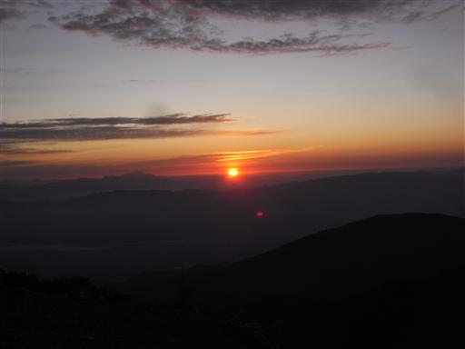
山頂は日の出を拝む人々で賑わっている。
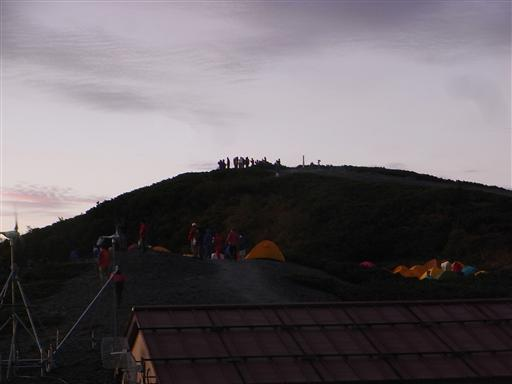
太陽が昇っていくに従い、目の前の穂高岳が赤く輝きだす。
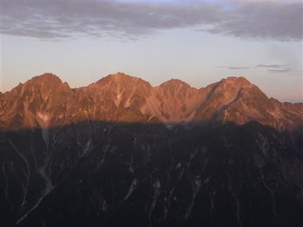
槍ヶ岳もモルゲンロートに染まっている。
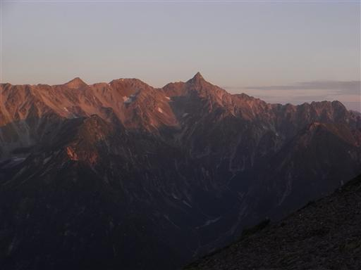
眼下には朝もやに霞む安曇野の町が見える。
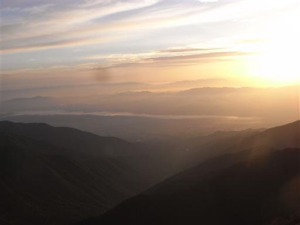
空に広がるうろこ雲。本日もすばらしい晴天だ。
6:06 準備をして小屋を出発する。
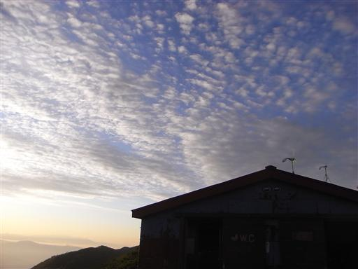
今日は一日稜線歩き。大展望が広がる中、なだらかな道を歩いていく。

標高2500mを越える稜線には、すでに紅葉の始まっている木もある。
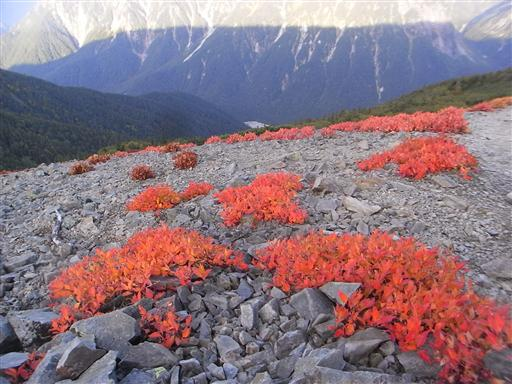
陽はだいぶ高くなり、赤く染まっていたアルプスの稜線も白と緑の姿になる。
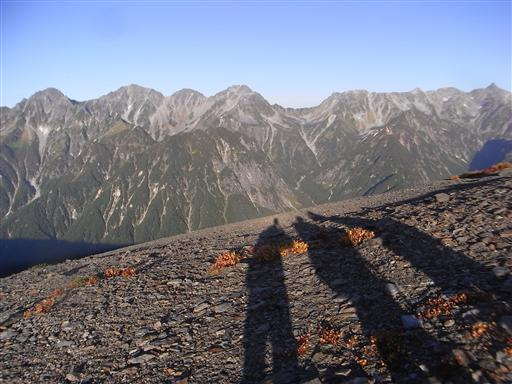
目の前に蝶槍が見えてきた。
ピークらしいピークが無いなだらかな蝶ヶ岳だが、
ここは遠くから見てもよく目立つところだ。
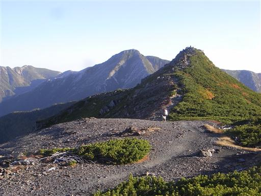
ここから常念岳へは大きく下降してから登り返すことになる。
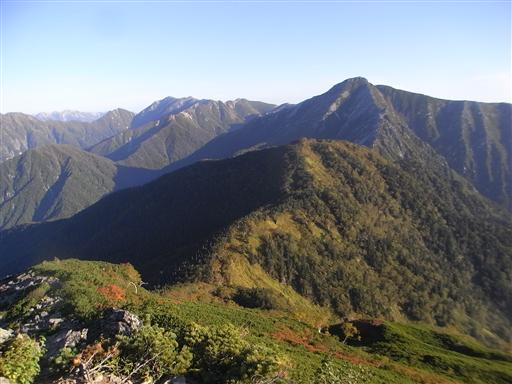
標高を下げていくと、樹林帯に入っていく。
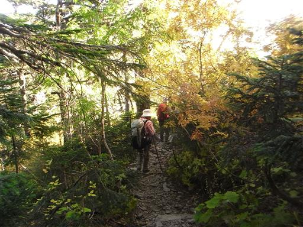
大展望の稜線もよいが、斜めから光が差す針葉樹林帯も好きだ。
樹林の間から槍や穂高がちらちらと見えている。
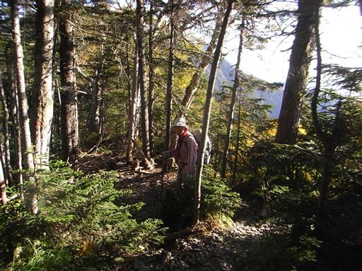
鞍部に到着。美しい樹林帯が広がっている気持ちのよい場所だ。
ここで一休みする。
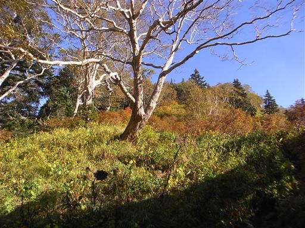
ここには小さな池がある。
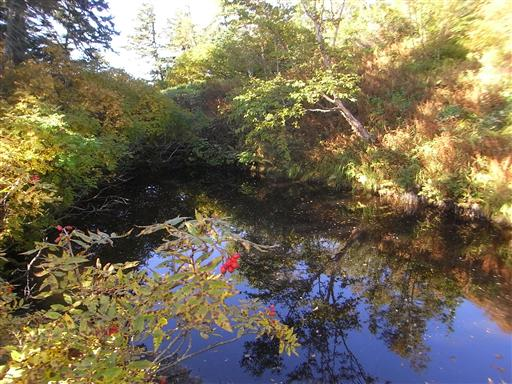
登りに入ると、再び森林限界を超える。
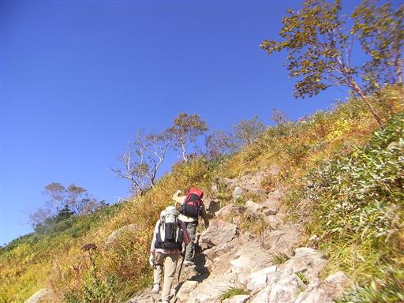
振り返ると蝶槍が一際目立っている。
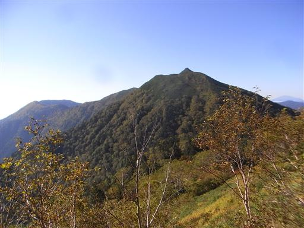
小ピークに到着。枯れかかったオオカサモチが寂しく立っている。
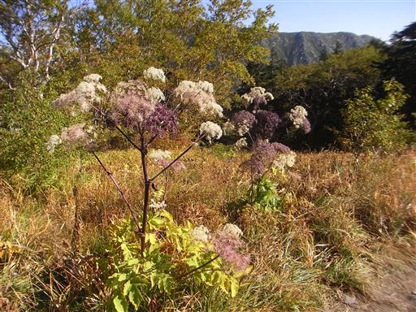
このピークからは前穂高岳がきれいに見える。
穂高前衛の山だが非常に迫力がある。
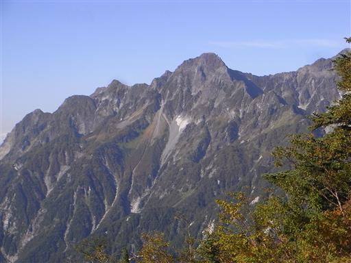
歩を進めると、目の前に巨大な常念岳が姿を現す。
稜線から一気にそそり立つその姿に圧倒される。
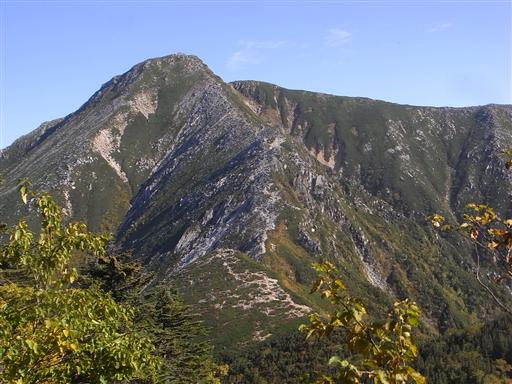
常念岳の登りに入ると、どこから現れたのか人の数が突然多くなる。
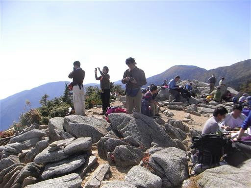
ここの登りは急斜面。とたんに足が止まってしまう。
昨日は快調に登っていたのだが…
飛行機雲がものすごい勢いで流されていく。
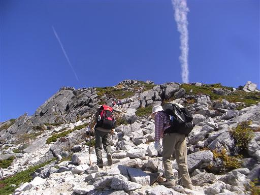
すぐ先に常念岳の山頂が見えているのだが、なかなかたどり着かない。
しかし振り返ると着実に高度は上がっている。
はるか遠くに蝶槍が望める。
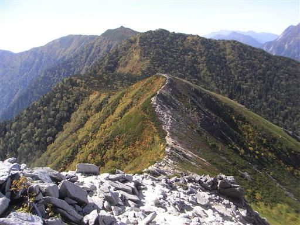
山頂まであともう少し。ゆっくりゆっくり休み休み登っていく。
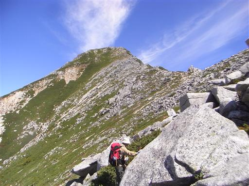
この辺りは非対称山稜。安曇野の側の斜面は崖になっている。

ここまで来ると穂高岳はだいぶ角度がつき、一塊の山として見ることができる。
それにしても巨大な山だ。
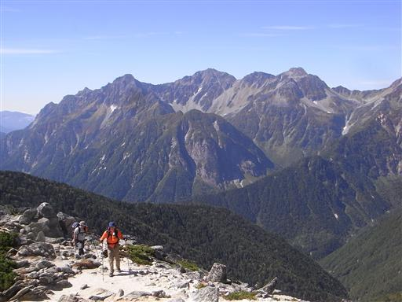
長い斜面を登りきり、山頂直下に到着。
山頂は大勢の人で賑わっている。
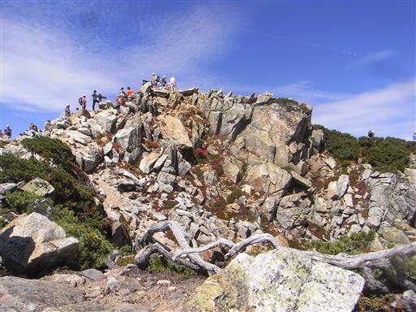
11:22 常念岳山頂到着。標高2857m。
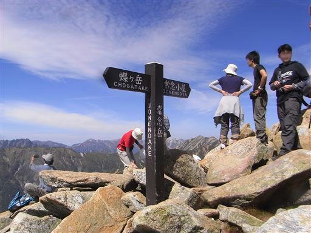
山頂には小さな祠が祀られている。

槍ヶ岳が真正面に見える。その他周囲の山々が一望の下。
大展望の山頂だ。
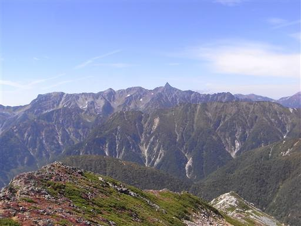
北にはこれから歩いていく稜線が見渡せる。
左に見える高いピークが本日の目的地、大天井岳だ。
今日はここまでずいぶん歩いたのに、絶望的に遠い。
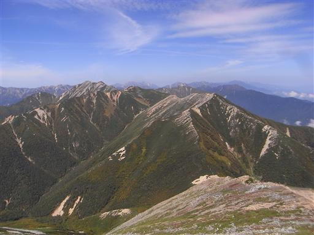
時間が押しているので、大混雑の山頂での休憩はそこそこにして出発する。
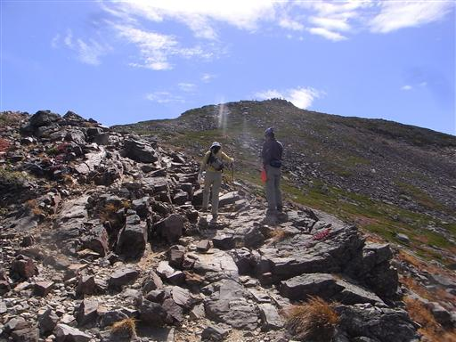
足下の常念乗越には常念小屋が見えている。
しかしこの下りがまた長い。小屋は見えているのに下っても下ってもたどり着かない。
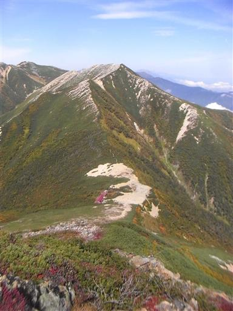
振り返ると常念岳が大きい。
こちらから見る常念岳はきれいな三角形だ。
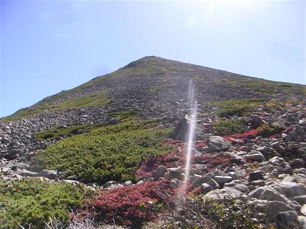
ようやく常念乗越まで下りてくる。
開けた場所でなかなかのロケーションだ。
もうすでに多くのテントが張られている。
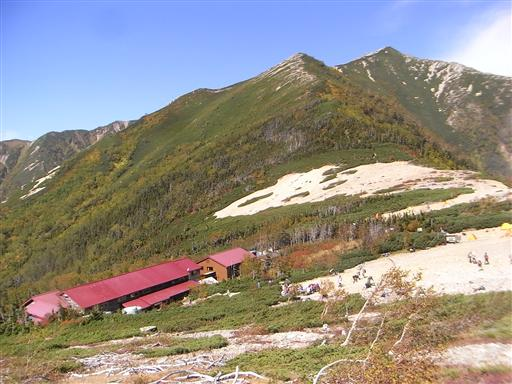
常念小屋で昼食をとる。
もうすでに本日の行動を終えた人だろうか、うまそうに生ビールを飲んでいる人がいる。
こちらはまだまだ歩くので我慢。
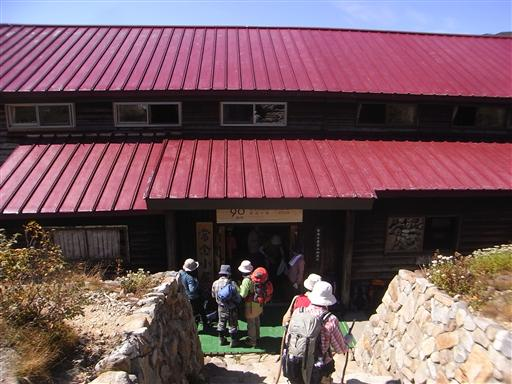
外に出ると穂高岳方面には雲が湧き出していて、大キレットに覆いかぶさっている。
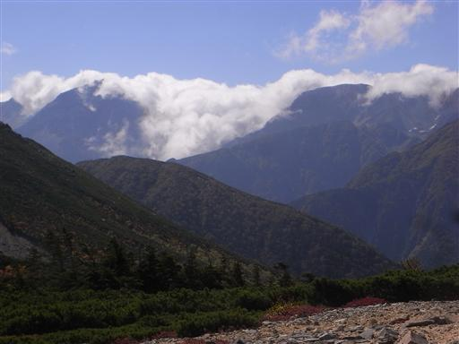
昼食をとったらすぐ出発。
賑やかな常念岳周辺と比べて、とたんに人影が少なくなる。
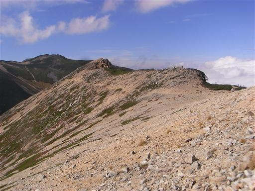
大天井岳までは緩やかな登りが続く。
しかし常念岳より大天井岳の方が高いので、それだけの標高差は登らなくてはならない。
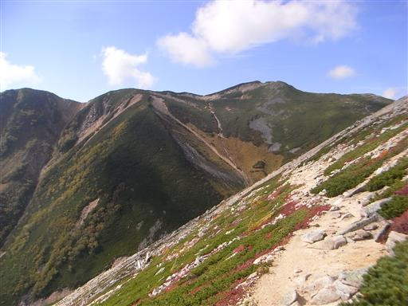
左手に見える沢は、遠く梓川まで続いている。
この辺りは梓川の源流域だ。
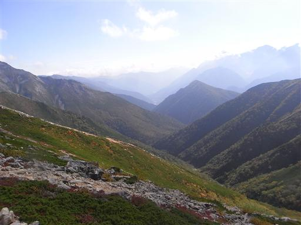
こちらの稜線もだんだんと雲に覆われてきた。
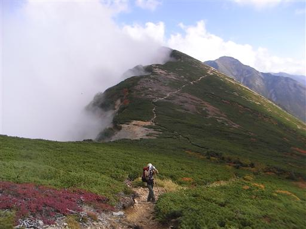
槍はまだ雲に隠れずに、シルエットが見えている。
ここから見るとロケットのような形だ。
後で聞いた話だが、この頃の槍ヶ岳は小屋の手続き待ちが1時間以上、
小屋から槍ヶ岳往復は長蛇の列で2時間超え、夕食は深夜まで続いたとか…
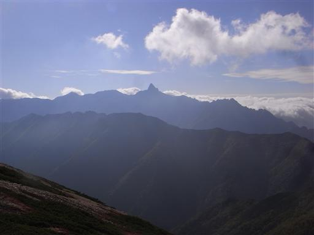
16:15 ようやく大天荘に到着。
小屋に入る時間としては何とか許容範囲で、ホッと一息だ。
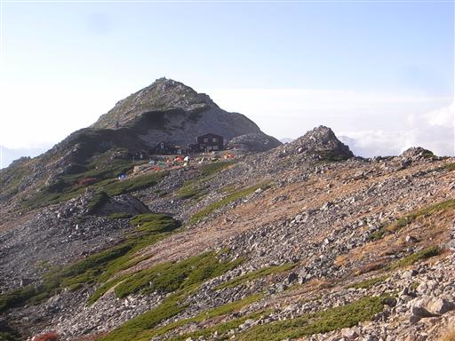
小屋で手続きを済ませた後、小屋の裏にある頂上に向かう。
16:42 大天井岳山頂到着。標高2922m。
常念山脈の最高峰だが、目立たないピークのため主役は常念岳に譲っている。
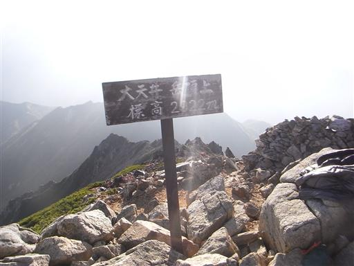
燕岳へ続く稜線がジグザグに走っている。明日歩く道だ。
しばらくすると辺りは雲に覆われる。
槍も燕も見えなくなり、二度とその姿を現すことは無かった。
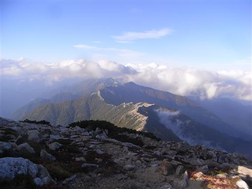
小屋に戻って天気予報を確認。明日は曇予報だ。
こちらの小屋も大混雑ではなく、いくらか空いているスペースもあった。
しかし、生ビールは残念ながら売り切れていた…
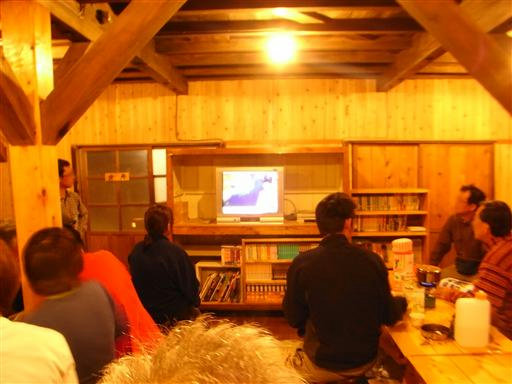